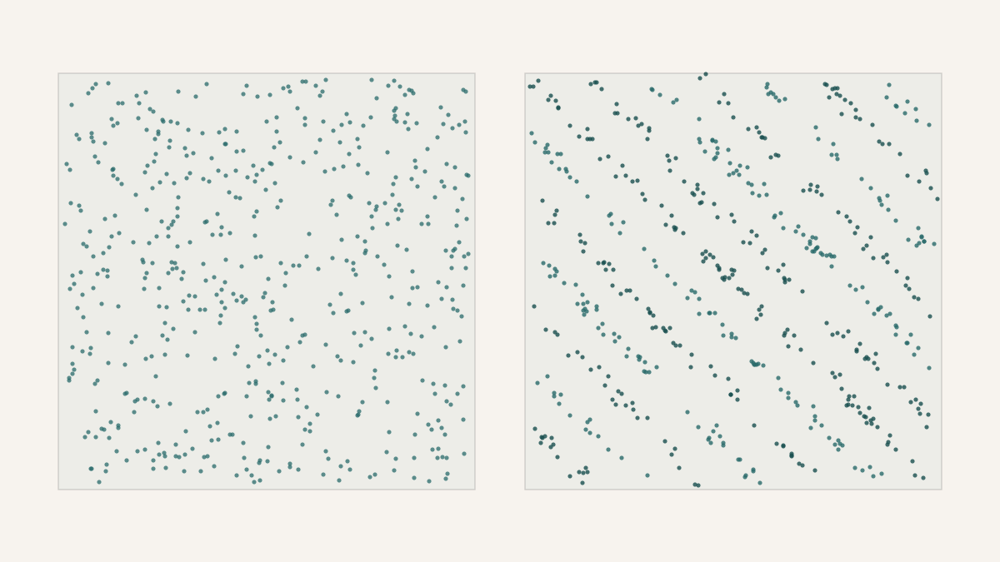

Does More Chaos Make a Better Cipher?
There is a seductive idea in cryptography that chaos is a natural source of secrecy. A chaotic system is deterministic — no randomness, no dice — and yet so exquisitely sensitive to its starting conditions that two nearly identical starts diverge into completely different futures. That is exactly the property you want in a cipher: change one bit of the key and the encrypted message should scramble beyond recognition. So it is tempting to reach for the most dramatic chaos you can find, on the theory that more complexity buys more secrecy. A project I worked on with a student set out to test that theory directly, and it came back inverted.
The setup was deliberately plain. Take five well-known chaotic maps — four of them one-dimensional (the logistic, tent, sine, and piecewise-linear maps) and one two-dimensional (the Hénon map) — and use each as the engine of a simple stream cipher. A stream cipher works by generating a long pseudo-random keystream and combining it with the message one bit at a time; if the keystream is genuinely random-looking, the ciphertext is too, and the message is hidden. Each map produces a sequence of numbers as it iterates; threshold those numbers into zeros and ones and you have a keystream. The question is which map produces the best one. The hypothesis going in was the intuitive one: the Hénon map, being two-dimensional and therefore richer, ought to win.
To judge "best," the keystreams were put through five standard tests of randomness. Are the zeros and ones balanced, or is the stream biased toward one? Is the entropy — the information density — close to the theoretical maximum of eight bits per byte? Are neighbouring bytes uncorrelated, as independent random values would be? Is the ciphertext incompressible, the way truly random data is? And does flipping a single bit of the key produce a completely different ciphertext? On paper all five maps are chaotic, so all five should do well. They did not do equally well, and the ranking was not the one anyone predicted.
The simplest map won. The tent map — a triangle-shaped rule so elementary you could compute it by hand — produced the most random keystream by every measure: near-perfect bit balance, the highest entropy at 7.95 of a possible 8 bits per byte, negligible correlation between neighbouring bytes, and ciphertext that would not compress at all. And the Hénon map, the sophisticated two-dimensional favourite, came last. Its ciphertext had the lowest entropy of the five, and it was the only one that compressed — a quiet but damning tell, because compressibility means a pattern is still there to be found. The fancy map was the worst at the one job it was supposed to be best at.
Why the fancy map failed. In exact arithmetic the Hénon map's orbit wanders forever across its folded attractor and never repeats. In a computer, which can only store finitely many distinct numbers, the orbit must eventually land on a value it has already visited — and from there it loops, forever. A keystream that loops is a keystream that compresses, which is the opposite of what a cipher needs.
Why the plain map wins is a matter of how evenly it spreads itself. The tent map visits every part of its range with equal frequency, so slicing its output at the midpoint yields as many zeros as ones — a naturally balanced keystream. The logistic map does not: at the parameter used it crowds its values toward the extremes, so the same slicing produced a stream that was 59 per cent ones, a bias an attacker could lean on. The piecewise-linear map had good balance but left a fingerprint of a different kind — its neighbouring bytes were noticeably correlated, the straight-line pieces of its rule imprinting short repeating patterns on the output. Each map failed, when it failed, in a way traceable to its own shape.
The Hénon map failed for the most humbling reason of all, and it has nothing to do with the mathematics of chaos. In the idealised world where numbers have infinite precision, the Hénon orbit is genuinely aperiodic: it threads its attractor forever without ever exactly repeating. But a computer does not store real numbers. It stores a finite set of floating-point approximations, and a sequence drawn from a finite set must eventually repeat — once the orbit lands, by rounding, on a value it has already occupied, it is trapped in a loop from then on. For the Hénon map in ordinary double precision those loops turn out to be short, and a short loop is death for a keystream: it means the "random" output is secretly periodic, which is exactly the redundancy that showed up as low entropy and compressible ciphertext. The sophistication that was supposed to be the Hénon map's advantage counted for nothing against the plain fact that the machine ran out of numbers.
There is one property, though, that every map had in abundance, and it is worth dwelling on because it is the property people usually point to. All five maps were superbly sensitive to their keys: flip a single bit of the key and roughly half the ciphertext bits flip in response, for every map, without exception. The butterfly effect was real and universal. But that is precisely the point the study makes. Key sensitivity is the easy part — it falls out of chaos automatically — and it is necessary but nowhere near sufficient. A cipher does not only need to react violently to key changes; it needs its output, for any fixed key, to be statistically featureless: balanced, unpredictable, incompressible. That second requirement is not guaranteed by chaos at all. It depends on quiet, unglamorous properties — how uniformly a map fills its range, how its structure correlates successive outputs, how it behaves once you pin it inside a finite-precision machine — and those are exactly the properties that separated the tent map from the Hénon map.
So the honest answer to whether more chaos makes a better cipher is no, or at least not on its own. "Chaotic" and "random" are different words that happen to sound alike. Chaos buys you sensitivity for free and nothing else for free; the featurelessness a cipher actually lives on has to be earned map by map, and the plainest candidate here earned it best while the most elaborate one was quietly defeated by the finite precision of the computer it ran on. Mathematical chaos is a thing that happens on paper. A cipher is a thing that happens in a machine, and the two are not the same place.
An honest caveat that should go before any stronger claim
None of this crowns the tent map as a secure cipher. What was tested was five raw maps under identical, deliberately simple conditions — one parameter setting each, the crudest possible way of turning a number into bits, and ordinary double-precision arithmetic throughout — which is a fair benchmark of the maps against each other but not a security proof for any of them. A real cipher would need far more: careful output extraction, a full sweep across each map's parameters, and the formal statistical test batteries that regulators actually require, none of which was run here. The Hénon map's poor showing in particular should be read narrowly — it is a statement about finite-precision behaviour at this precision, and higher-precision arithmetic or a deliberate perturbation scheme might well recover the theoretical properties it lost. The durable lesson is not "use the tent map." It is that chaos alone does not certify randomness, and every candidate has to prove it the hard way.